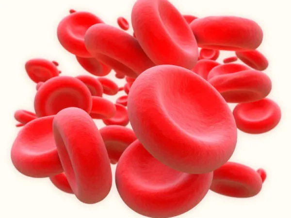
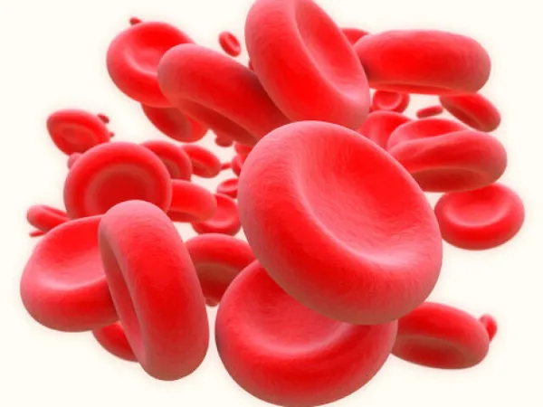

Trabalho Integrador - Biomaket de Biologia
A biomaket é um projeto anual do campus IFRN Parnamirim e de autoria da professora Andrea Pereira,
em junção com o Projeto Integrador do professor Álvaro Hermano.
Nós, do grupo hemafiósos, ficamos com o tema Hemácias e suas Funções.
O que são hemácias?
As hemácias, também conhecidas como glóbulos vermelhos, são células sanguíneas cujo principal papel
é transportar oxigênio para as células do corpo. Elas fazem isso por possuírem uma proteína chamada
hemoglobina, que se liga ao oxigênio quando o sangue passa pelos pulmões e leva para as outras partes
do corpo quando a sangue circula. Além disso, elas também ajudam a remover o gás carbônico (CO₂) das
células do corpo, que é um resíduo produzido pelas própias células.
 

E como isso funciona?
Abaixo, está um vídeo expositivo de como funciona todo esse processo de uma maneira didática.
Alunos

Antony Gabriel

Isa Fernandes

Ramon Lincon